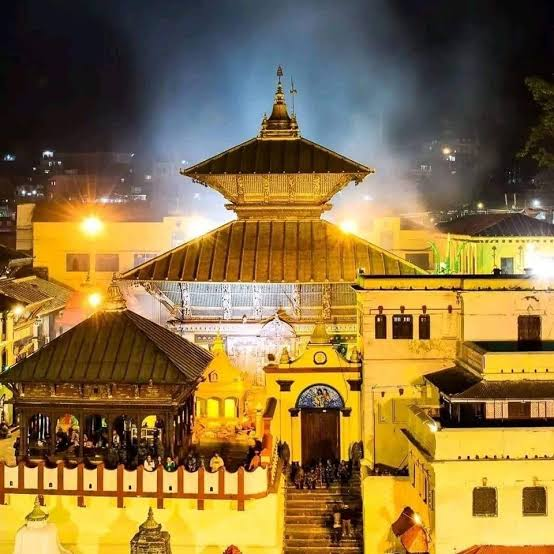
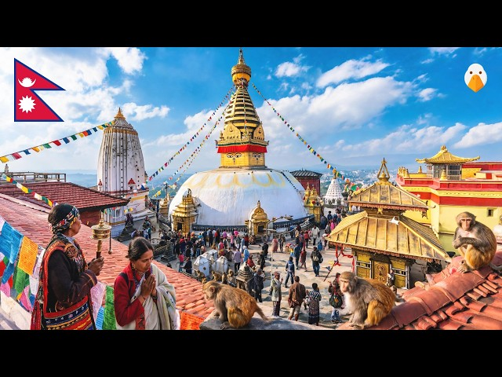
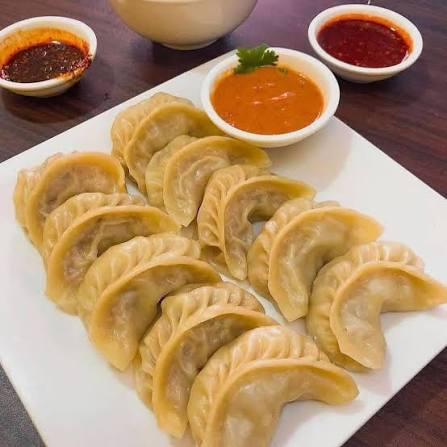
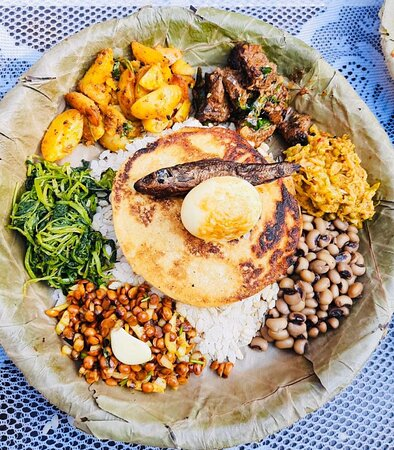
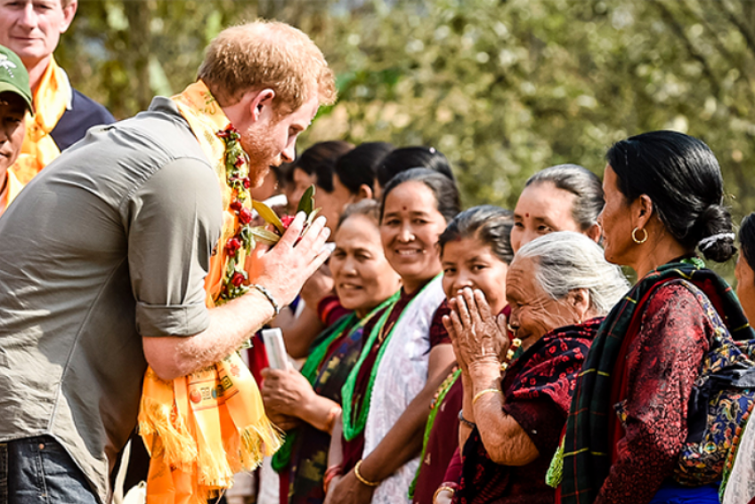

Spiritual Heritage & Religion


Hinduism & Buddhism Harmony
Nepal is a nation where Hinduism and Buddhism coexist in profound harmony, sharing sacred traditions and spiritual spaces.

Sacred Festivals
Vibrant festivals like Dashain, Tihar (Diwali), and Buddha Jayanti fill the calendar with lights, colors, family gatherings, and celebrations.
Art & Culture

Traditional Architecture
Intricate wooden carvings, multi-tiered pagoda-style temples, and historic Durbar Squares reflect centuries of master craftsmanship.

Music & Folk Dance
Traditional dances like Maruni and Lakhe, accompanied by instruments like the Madal and Sarangi, tell ancient cultural stories.
Flavorful Cuisine

Dal Bhat Tarkari
The ultimate everyday powerhouse meal consisting of steamed rice, spiced lentil soup, and flavorful vegetable or meat curries.


Momos & Newari Feasts
From juicy steamed dumplings (momo) with spicy achar to rich Newari sets, Nepali food is bursting with authentic local spices.
Diverse Lifestyles & Geography

Life in the Himalayas & Mountains
Resilient mountain communities residing near majestic peaks, maintaining rich Sherpa and Himalayan traditions amidst serene alpine landscapes.

Life in the Terai Plains
Warm agricultural flatlands characterized by vibrant Tharu culture, lush green farmland, wildlife sanctuaries, and rich agrarian traditions.

Modern City Life
A bustling blend of ancient heritage and modern growth in cities like Kathmandu, Lalitpur, and Pokhara, filled with vibrant markets and modern energy.

Community & Hospitality
Rooted in the ancient philosophy of "Atithi Devo Bhava" (Guest is God), deep community ties and unmatched warmth define everyday life.
About the Creator

Prakriti Nepal
Computer Science Student | Web Developer
Namaste! I created Glimpse of Nepal to share the rich heritage, vibrant traditions, and everyday beauty of my home country through modern web technology.